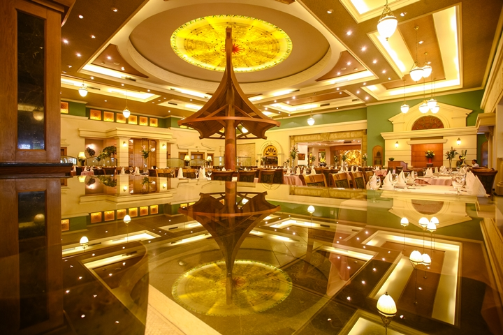
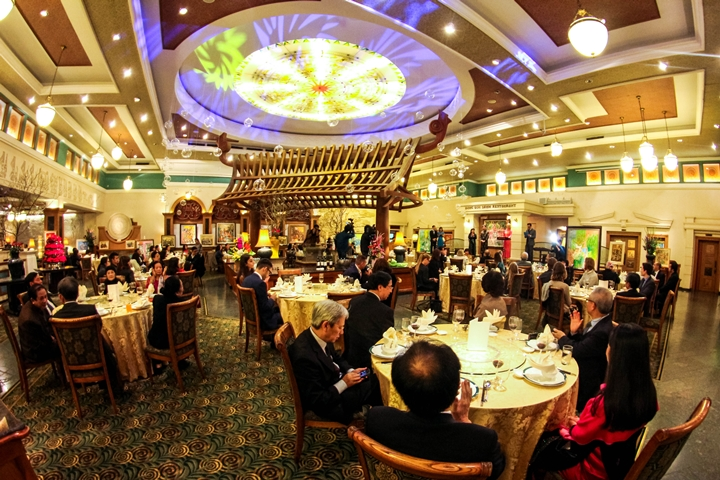
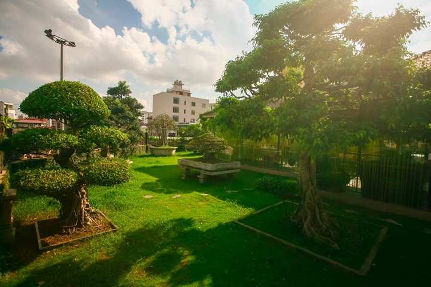

Giới thiệu nhà hàng
Nhà Hàng Trống Đông Sơn – tự hào bởi sự hiện diện của các vị chính khách, các nguyên thủ quốc gia nổi tiếng trong nước cũng như trên thế giới đã ấn định những buổi tiệc chiêu đãi tại nhà hàng. Nhà hàng sở hữu một không gian sang trọng nhưng vẫn không mất đi nét văn hóa riêng của Việt Nam.

Nhà Hàng Trống Đông Sơn cảm ơn rất nhiều vì sự ưu ái của các doanh nhân trong và ngoài nước đã lựa chọn chúng tôi làm nơi hội họp, bàn bạc công việc. Đây cũng là địa điểm tổ chức tiệc tùng yêu thích của giới văn nghệ sĩ hàng đầu trong nước và hải ngoại. Chính sự quan tâm và ưu ái của các thực khách đã thúc đẩy thêm tiềm tàng sưu tầm cổ vật Đông Sơn ngày càng tăng giá trị vốn không thể đánh đổi được. Bộ sưu tập đó đang được trưng bày tại Nhà Hàng Trống Đông Sơn cùng các buổi triển lãm vinh danh văn nghệ sĩ.

Với sự khác biệt đa dạng về sản phẩm và dịch vụ quý khách có rất nhiều lựa chọn phù hợp cho những buổi tiệc chiêu đãi lớn hoặc nhỏ: - Phòng tiệc VIP hạng siêu sang. - Phòng tiệc chiêu đãi doanh nhân. - Khu vực đặc biệt dành cho gia đình. - Sảnh tiệc lớn - nhỏ tổ chức các sự kiện. - Khu vực giải trí Club Bar - Lounge. - Tiệc ngoài trời theo yêu cầu tại vườn. - Thực đơn tiệc đa dạng phù hợp mọi nhu cầu. - Thực đơn chọn sẵn dành cho khách du lịch.

Hãy cùng Nhà Hàng Trống Đông Sơn đưa hương vị ẩm thực Việt Nam chuẩn mực và sang trọng ra thế giới rộng lớn để mọi người khắp nơi được thưởng thức, còn chúng tôi được đón nhận nhiều lời khen từ các bạn.